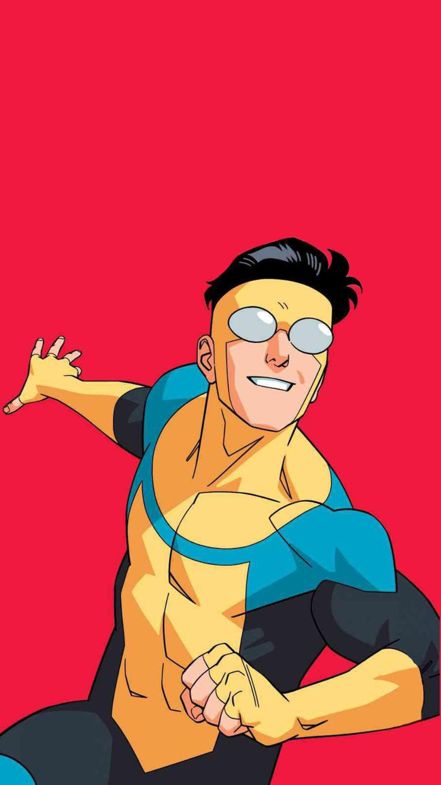

Invincible
Possesses super strength, flight, invulnerability, enhanced healing, and longevity, inheriting his Viltrumite powers while learning to balance heroism and humanity.
Possesses super strength, flight, invulnerability, enhanced healing, and longevity, inheriting his Viltrumite powers while learning to balance heroism and humanity.
Omni-Man possesses super strength, flight, near-invulnerability, enhanced healing, longevity, and expert combat skills, making him one of the most powerful Viltrumites in existence.
Eve has the power to manipulate matter at a molecular level, allowing her to alter, create, and heal objects or living beings by reshaping their atomic structure.
Allen the Alien possesses super strength, invulnerability, the ability to fly at incredible speeds, enhanced durability, and advanced combat skills, making him a formidable warrior across the universe.